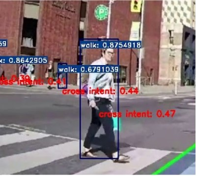
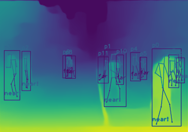
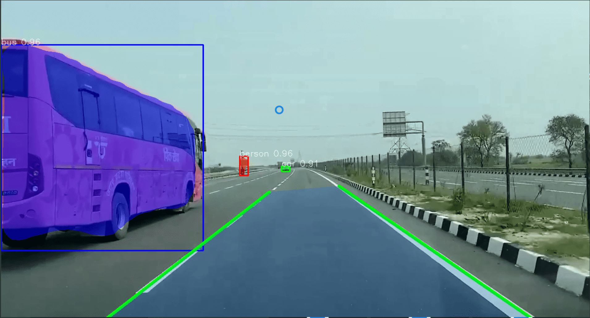
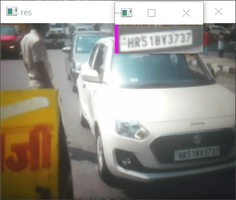

Estimating Pedestrian Intent for Crossing Roads
In Autonomous driving applications, detecting pedestrians is a crucial task that can be accomplished through computer vision techniques. However, the challenge is to detect the action of pedestrians and predict their intent. A vision-based system is developed to detect pedestrians intent through their actions and their proximity to the lanes. From these parameters, a crossing intent score can thus be calculated estimating the likelihood of pedestrians crossing the road. Based on this score, ADAS or Autonomous vehicles (AV) can make maneuvering decisions.

Estimating pedestrian proximity using MiDaS and YOLOv7
Implementing MiDaS monocular depth estimation model to estimate the distance of pedestrians from the camera. Using the YOLOv7-pose model to detect pedestrians and their keypoints, then applying Midas depth estimation to each detected bounding box to obtain the corresponding inverse depth values and classify the proximity of pedestrians as near or far from the vehicle.

Instance segmentation of objects with lane detection on road
Detecting vehicles and different object surrounding the car, identifying the particular class it belongs to using the pixellib library and pre trained COCO weights[mask_rcnn]. Along with instance segmentation, also detecting and marking the lane boundries of the road

Detecting lanes on road
Developing a pipeline to detect lane markings on road from an image and fine tuning the parameters to extrapolate the detected lane markings for improving the lane detections on the road in a video stream recorded by a vehicle which can also be implemented in real-time by mounting the camera on a vehicle.

Number plate recognition using OpenCV
Detect number plates of vehicles in real-time and extract the image using OpenCV. The algorithm used is Haar Cascade, a classifier which is used to detect the object[number plates] for which it has been trained.
 | |
Read More
| |
Read More